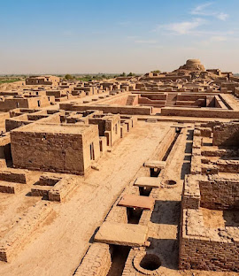

Forgotten secrets of Mohenjo-daro | Unearthing Ancient Civilization
A Marvel of Ancient Urban Planning
Situated in the fertile plains of Sindh, Pakistan, Mohenjo-Daro stands as one of the most remarkably preserved urban settlements of the ancient world. Built around 2500 BCE, this sprawling metropolis was a major center of the Indus Valley Civilization. Long before modern municipal planning emerged, the architects of Mohenjo-Daro were designing sophisticated grid systems, standardized baked-brick houses, and elaborate drainage systems that rivaled many civil engineering achievements of the 19th century.
Walking through the excavated streets today offers a striking glimpse into an egalitarian society that prioritized hygiene, structure, and community welfare over grand military monuments. Unlike ancient Egypt or Mesopotamia, no royal palaces or grand temples dominating the skyline have been uncovered here, suggesting a surprisingly unique governance model.

-
"Mohenjo-Daro was not merely built with bricks; it was engineered with a vision of urban perfection that echoed through centuries."
— Historical Insights Journal -
"Long before modern cities, Mohenjo-Daro mastered the art of water, sanitation, and architectural precision."
— World History & Civilizations
Engineering Genius: Water and Sanitation
Perhaps the most astonishing achievement of Mohenjo-Daro was its advanced water management infrastructure. Almost every private household featured its own tiled bathroom, personal water well, and direct access to covered street drains lined with brick inspection traps for maintenance.
"The hydraulic engineering of the Indus Valley was millennia ahead of its time, turning urban sanitation into an art form long before classical antiquity."
— Archealogical Field Notes, 2026
At the center of the citadel mount lies the great Bath-a massive, waterproofed public pool constructed with finely fitted bricks, bitumen sealent, and a sophisticated draining system. Historians believe this venue hosted ceremonial purification rituals essencial to the city's civic life
Key Discoveries from the excavations
Through decades of careful archaeological excavation, artifacts have emerged that shed light on the daily life, artistic craftsmanship, and global trade connections of the Indus inhabitants.
- The Dancing Girl Statue: A bronze statutte demonstrating markable mastery over metal casting techniques
- The Priest-King Bust: A carved soapstone sculpture reflecting intricate stone carving and traditional attire
- Uncipherd Indus Script: Intricate stone seals featuring symbols and animal motifs that remains unsolved today
- Standardized Weights and Measures: Precision chert weights ued across trade networks extending to mesopotamia